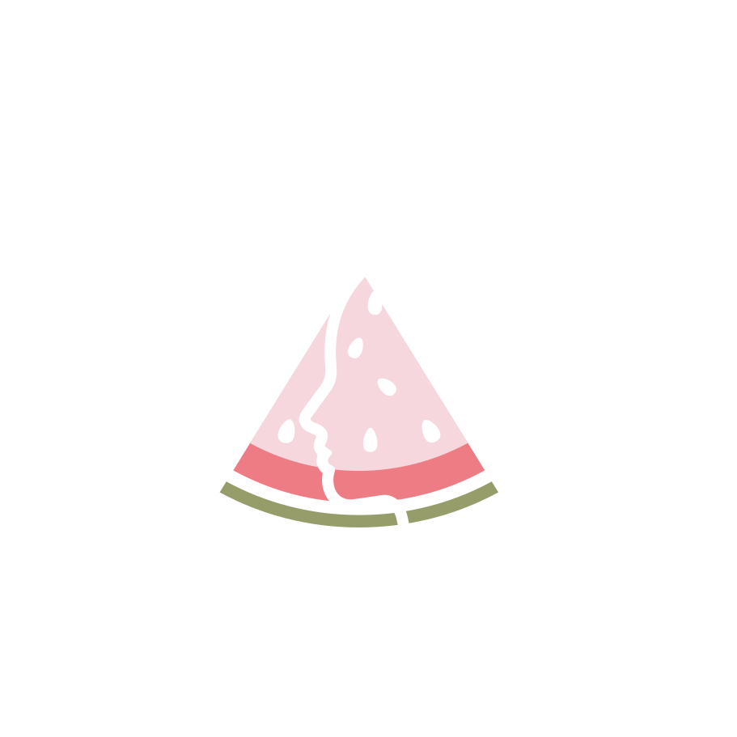

¿Enfrentas un diagnóstico médico que transformó tu forma de comer? ¿O buscas mejorar tu alimentación?
Soy la Nutrióloga Leonela Mendoza y te ofrezco una atención nutricional humana, integral y libre de juicios.
Sé que recibir un diagnóstico como diabetes, una afección renal, digestiva u hormonal, o estar atravesando un procedimiento quirúrgico, puede ser abrumador. Cuando los síntomas te impiden comer de forma habitual o cuando las restricciones hacen que alimentarte se sienta como un reto diario, es completamente normal sentir incertidumbre.
La nutrición no solo es tratamiento, también es prevención: de restricciones alimentarias, enfermedades, o de signos y síntomas no habituales que hemos llegado a considerar "normales".
Ya sea que busques mejorar tu estilo de vida o requieras apoyo de la mano con un diagnóstico, no tienes que atravesar esto a ciegas. Estoy aquí para acompañarte a resolver esas dificultades, adaptar tu alimentación a tus necesidades reales y ayudarte a recuperar la tranquilidad, la confianza y el bienestar en tu día a día.
"Recuerda: más allá de un diagnóstico, primero eres una persona. No eres tu condición, eres quien decide cómo vivir con ella."